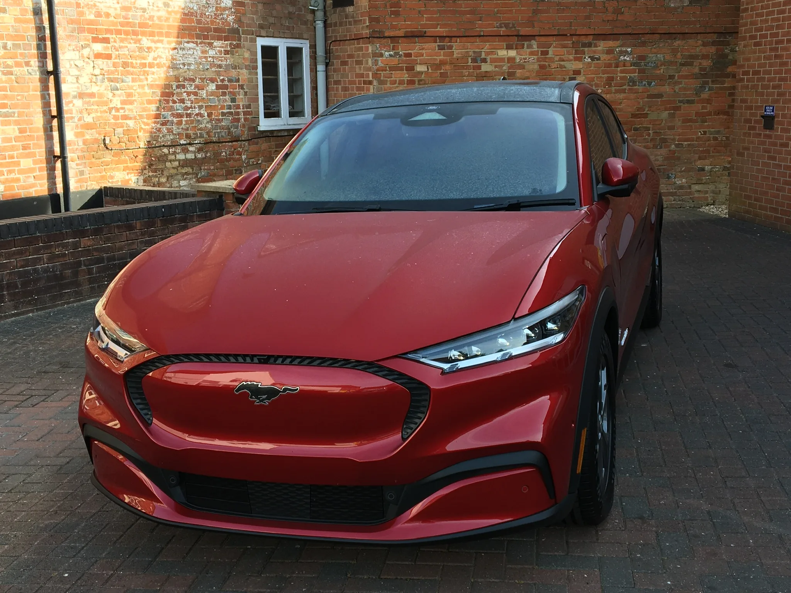
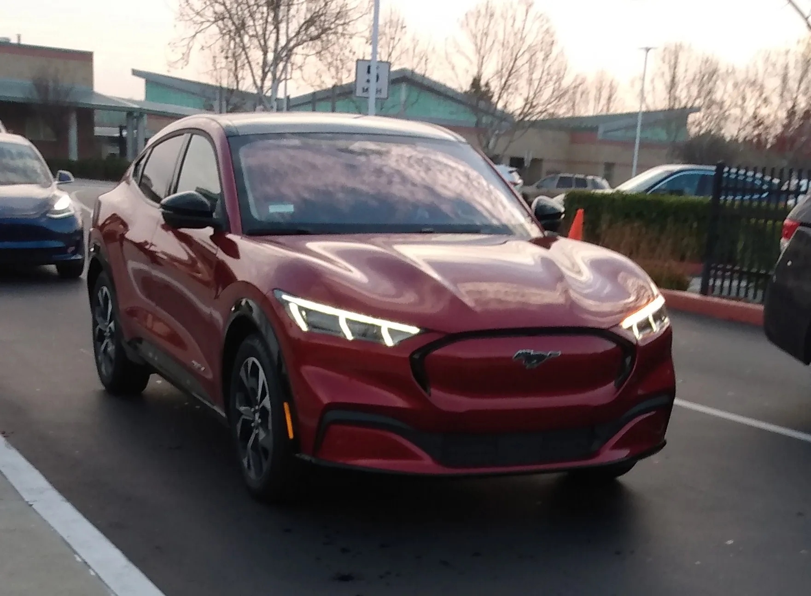
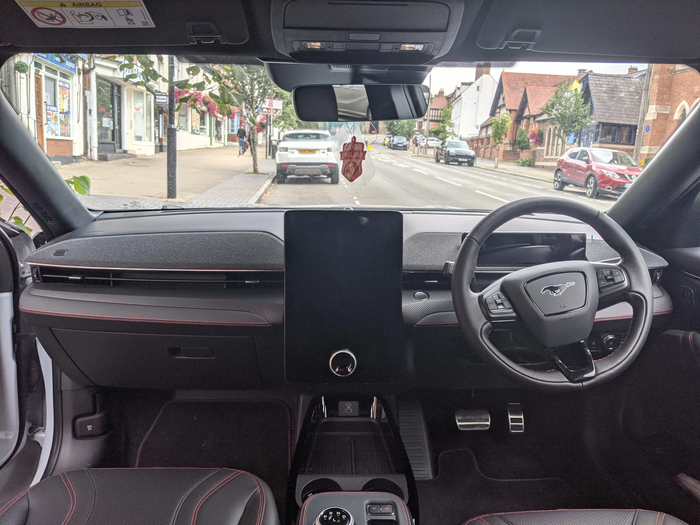
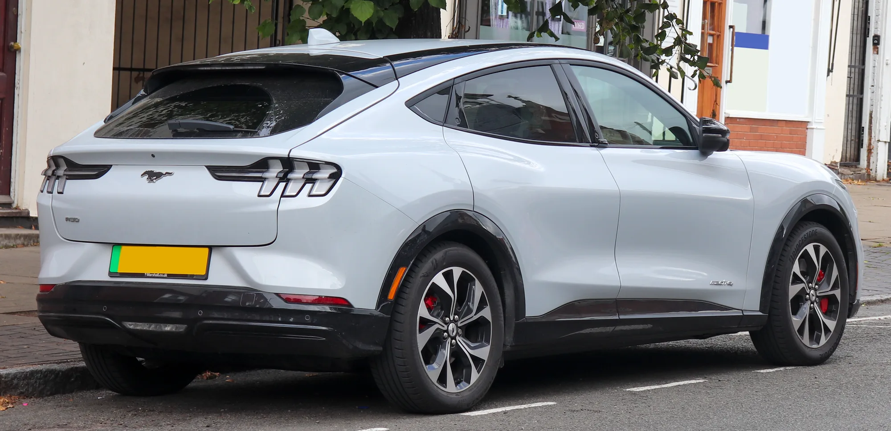
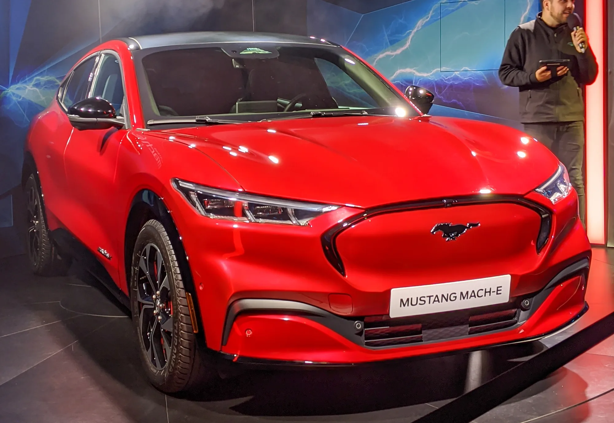

▲ 포드 머스탱 마하-E. 우버와 웨이브는 이 차 15대로 런던 로보택시 서비스를 시작했다(기사 속 실제 운행 차량 사진은 아님) ⓒ Wikimedia Commons
우버가 영국 자율주행 스타트업 웨이브(Wayve)와 협력해 런던에서 로보택시 서비스를 시작했다. 투입 차량은 포드 머스탱 마하-E 15대. 다른 도시의 로보택시 서비스가 대개 특정 구역에서만 제한적으로 운행하는 것과 달리, 이번 서비스는 공항 구역을 제외한 런던 도심 전역에서 호출할 수 있다는 점이 특징이다.
1. 우버 + 웨이브, 역할 분담 구조

▲ 포드 머스탱 마하-E. 우버는 호출 플랫폼을, 영국 스타트업 웨이브는 자율주행 기술을 맡는 구조다 ⓒ Wikimedia Commons
이번 서비스에서 우버는 승객과 차량을 연결하는 호출 플랫폼 역할을, 영국 자율주행 스타트업 웨이브는 자율주행 기술을 담당한다. 완성차를 직접 만들지 않는 두 회사가 기존 양산차(머스탱 마하-E)에 자율주행 기술을 얹어 서비스를 상용화하는 방식으로, 로보택시 전용 차량을 새로 설계하는 웨이모·죽스 등과는 다른 접근이다.
2. 운행 범위 — "공항만 빼고 다 됩니다"

▲ 영국 사양(우측 운전석) 머스탱 마하-E 실내. 로보택시 실제 차량 사진은 아니며 참고용이다 ⓒ Wikimedia Commons
웨이모를 비롯한 대부분의 로보택시 서비스는 도시 내 일부 구역에서만 운행을 시작해 점진적으로 범위를 넓히는 방식을 택해 왔다. 반면 이번 런던 서비스는 시작 단계부터 공항 구역을 제외한 런던 도심 전역을 서비스 범위로 잡았다. 이는 웨이브의 자율주행 기술이 처음부터 넓은 도로 환경에 대응하도록 설계됐다는 자신감의 표현으로 해석된다.
3. 안전요원은 아직 필요하다

▲ 영국 번호판을 단 머스탱 마하-E 후면. 로보택시 실제 차량 사진은 아니며, 같은 모델이 영국 도로에서 이미 흔히 운행되고 있음을 보여주는 참고 사진이다 ⓒ Wikimedia Commons
초기 단계에서는 런던교통공사(TfL)의 허가를 받은 전문 운전자가 모든 차량에 탑승해 시스템을 감독한다. TfL은 웨이브에 1년간 최대 15대의 차량으로 시범 운행할 수 있는 개인승합면허를 내줬으며, 완전 무인 운행에는 영국 교통부 산하 차량표준청(DVSA)의 별도 '자동승객서비스 허가'가 추가로 필요하다. 이는 웨이모가 미국 일부 도시에서 완전 무인 운행을 이미 상용화한 것과 비교하면 보수적인 접근으로, 런던교통공사의 규제 승인 조건에 따른 것으로 풀이된다.
4. 다음은 도쿄 — 우버의 글로벌 로보택시 확장

▲ 런던 시내를 달리는 머스탱 마하-E 기반 차량(로보택시가 아닌 다른 용도 사례). 같은 모델이 런던 도로 환경에서 이미 다양하게 쓰이고 있음을 보여준다 ⓒ Wikimedia Commons
우버는 이번 런던 서비스를 시작으로 2026년 말까지 최대 15개 도시에서 자율주행 호출 서비스를 운영한다는 목표를 세웠다. 일본 도쿄에서는 올해 안으로 닛산 리프를 투입할 계획이며, 전 세계 12개 시장으로 자율주행 파트너십을 확대하는 것이 큰 그림이다. 완성차 업체·자율주행 스타트업과의 다각적 제휴를 통해 자체 차량 없이도 로보택시 시장에 빠르게 발을 넓히려는 전략으로 읽힌다.
5. 정리 — 런던이 시험대가 된 이유
체크포인트
- 런던은 좌측통행·좁은 도로·복잡한 교차로가 많아 자율주행 기술의 까다로운 시험대로 꼽힌다.
- 안전요원 동승은 과도기적 조치이며, 완전 무인 전환 시점은 런던교통공사의 추가 승인에 달려 있다.
- 우버의 확장 전략은 자체 차량 개발 없이 파트너십으로 시장을 넓히는 방식이라는 점에서 웨이모·죽스와 결이 다르다.
완전 무인 전환 여부와 시점, 그리고 다른 도시로의 확산 속도가 이번 서비스의 성패를 가늠할 다음 관전 포인트다.

▲ 런던에서 열린 클래식카쇼에 전시된 머스탱 마하-E(2020년 촬영). 로보택시 실제 운행 차량은 아니며, 같은 모델이 런던에서 오래전부터 소개돼 온 차라는 점을 보여주는 참고 사진이다 ⓒ Wikimedia Commons